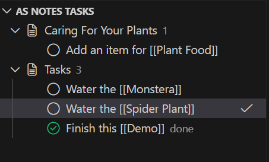
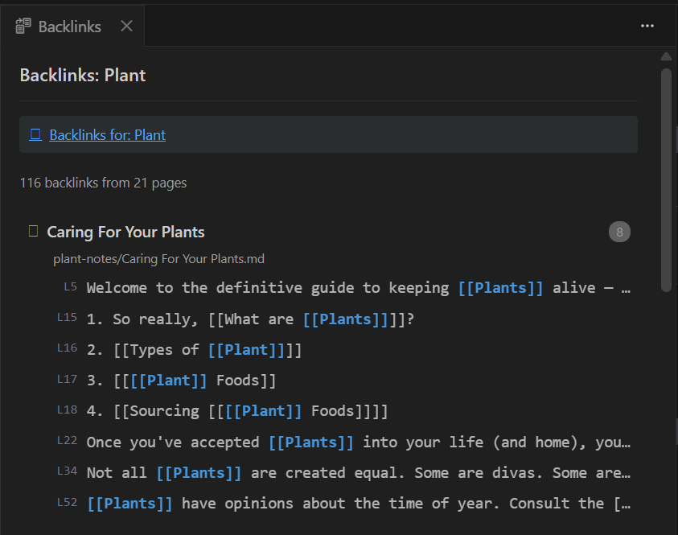
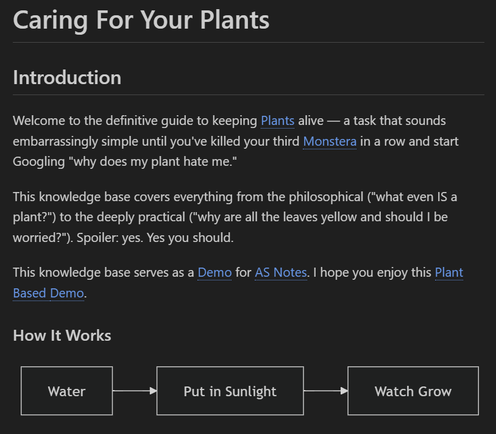

AS Notes: Turn VS Code Into Your Personal Knowledge Management System (PKMS)
If you already live in VS Code, maybe you like managing your notes there too?
AS Notes is a VS Code extension that brings the power of wikilink-based knowledge management - the kind you'd find in Obsidian, Logseq, or Roam - directly into your editor. No Electron wrapper. No separate app. No syncing headaches. Just your markdown files, your Git repo, and the editor you already know.
1 minute demo:
Why Another Note-Taking Tool?
Most developers already have a note-taking workflow, but it often lives somewhere else - a separate app, a browser tab, a SaaS product that owns your data. You context-switch out of your editor, lose your train of thought, and slowly stop maintaining your notes altogether.
AS Notes takes a different approach:
- Your data stays local. No cloud sync, telemetry or accounts. Your notes are plain markdown files in a folder you control.
- Git-friendly by design. Every note is a
.mdfile. Diff them, branch them, review them - your knowledge base gets the same versioning discipline as your code. - Lightweight indexing. A local SQLite database (powered by WASM - no native dependencies) keeps everything fast without bloating your workspace.
- Leverage other markdown enhancement extensions. Keep using your Mermaid diagrams with AS Notes.
Wikilinks (With Robust Nested Wikilink Handling)
Type [[ trigger page selection and autocomple control:
[[Page Name]]resolves toPage Name.mdanywhere in your workspace - not just the current folder.- Nested links like
[[Project [[Alpha]] Notes]]create multiple navigable targets. Click the inner link to go toAlpha.md, click the outer portions to go toProject [[Alpha]] Notes.md. - Ctrl+Click to navigate. If the target doesn't exist, it's created automatically - useful for forward-referencing pages you plan to write later.
- Hover tooltips show you the target file, whether it exists, and how many other pages link to it.
- Autocomplete kicks in the moment you type
[[, listing every page and alias in your knowledge base.
When you rename a link, AS Notes detects the change and offers to rename the underlying file and update every reference across your workspace.
Page Aliases
Sometimes a concept has more than one name. Define aliases in YAML front matter. Take the page JavaScript.md for example:
aliases:
- JS
- ECMAScript
Now [[JS]] and [[ECMAScript]] both navigate to the same page. Hover tooltips show the resolution path, backlink counts include alias references, and rename tracking updates aliases in the front matter when you change them.
Tasks Management
AS Notes includes a lightweight task management system built on standard markdown checkboxes:
Press Ctrl+Shift+Enter on any line to cycle through states:
| You write... | After toggle |
|---|---|
buy milk |
- [ ] buy milk |
- [ ] buy milk |
- [x] buy milk |
- [x] buy milk |
buy milk |
The Tasks panel in the Explorer sidebar aggregates every todo across your entire knowledge base, grouped by page. Filter to show only unchecked items, click to jump to the source line, or toggle completion directly from the panel.

Backlinks: The Bigger Picture
The Backlinks panel shows every page that links to the file you're currently editing, with the surrounding line text for context. A straightforward way to see how ideas connect across your knowledge base.
Open it with Ctrl+Alt+B and it stays in sync as you navigate between files.

Daily Journal
Press Ctrl+Alt+J to create or open today's journal entry. AS Notes generates a dated markdown file from a customisable template - add your own sections, prompts, or front matter to shape your daily workflow.
Journal files are indexed instantly, so wikilinks and backlinks work from the moment the file is created.
Markdown Preview Handling
AS Notes translates the nested wikilink structure when rendering markdown previews, so the links and nested links correctly navigate to the target documents. We don't expect you to spend much time in Markdown Preview, but it's nice for more complex documents or if you want to view page elements supported by other extensions - Mermaid Diagrams for example:

Privacy First
AS Notes doesn't send your data anywhere. No telemetry, no cloud service, no account. Your notes are plain files on your filesystem - back them up however you like. The SQLite index is local and can be rebuilt at any time.
Get Started
- Install AS Notes from the VS Code Marketplace
- Open a folder in VS Code
- Run AS Notes: Initialise Workspace from the Command Palette
- Start typing
[[in any markdown file
That's it. No configuration required. If you want a sample knowledge base to explore, clone the demo notes repository and follow the setup instructions.
Built for Developers
AS Notes is designed for developers who want a knowledge management tool that respects the way you already work - in a text editor, with plain files, under version control. But the wikilink paradigm is powerful for anyone who thinks in connections: researchers, writers, students, or anyone building a second brain.
If you've been looking for a way to manage your notes without leaving VS Code, give AS Notes a try.
Install from the VS Code Marketplace | Source on GitHub